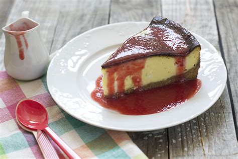

Tarta de queso al horno
Tiempo:1 hora 20 minutos
Dificultad:Media
Ingredientes
- 500g de queso crema
- 200g de azúcar
- 3 huevos
- 1 cucharada de extracto de vainilla
- Base de galletas
Pasos
- Mezclar el queso crema con el azúcar hasta obtener una mezcla suave.
- Añadir los huevos y la vainilla, mezclando bien.
- Verter sobre la base de galletas en un molde.
- Hornear a 180°C durante 50 minutos y dejar enfriar antes de servir.